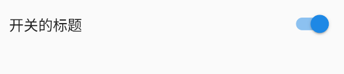

SwitchListTile
开关组件
显示结果

SwitchListTile(
value: true,
onChanged: (bool value) {},
title: const Text('开关的标题'),
),
属性
-
● value： true-开，false-关
-
● onChanged： 变化时回调
-
● activeColor： 打开状态下颜色
-
● activeTrackColor： 打开状态下track颜色
-
● inactiveThumbColor： 关闭状态thumb颜色
-
● inactiveTrackColor： 关闭状态track颜色
-
● activeThumbImage： 打开状态下thumb图片
-
● inactiveThumbImage： 关闭状态thumb图片
-
● title： 主标题
-
● subtitle： 副标题
-
● dense： 是否是listView子节点
-
● contentPadding： 内边距
-
● secondary： 图标
-
● selected： false-是否选中
-
● autofocus： false
-
● controlAffinity： ListTileControlAffinity.platform - 排列顺序